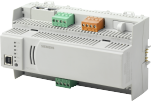
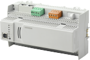

PXC3 产品说明
| PXC3.E16A-1, 房间自动化站
订单号：S55376-C118 下载数据表：CM1N9203 |

| PXC3.E16A-2, 房间自动化站
下载数据表：CM1N9203 |
 | PXC3.E72A, 房间自动化站
订单号：S55376-C101 下载数据表：CM1N9203 |
PXC3.E72A-1, 房间自动化站
订单号：S55376-C131 下载数据表：CM1N9203 |
PXC3.E72A-2, 房间自动化站
订单号：S55376-C178 下载数据表：CM1N9203 |
 | PXC3.E75, 房间自动化站
订单号：S55376-C102 下载数据表：CM1N9203 |
PXC3.E75-1, 房间自动化站
订单号：S55376-C132 下载数据表：CM1N9203 |
PXC3.E75A, 房间自动化站
订单号：S55376-C103 下载数据表：CM1N9203 |
PXC3.E75A-1, 房间自动化站
订单号：S55376-C133 下载数据表：CM1N9203 |
PXC3.E75A-2, 房间自动化站
订单号：S55376-C179 下载数据表：CM1N9203 |